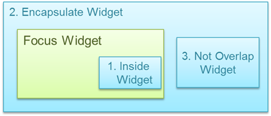
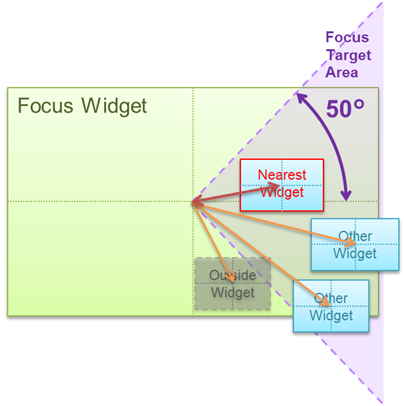
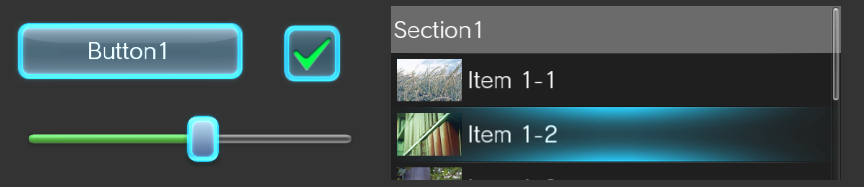
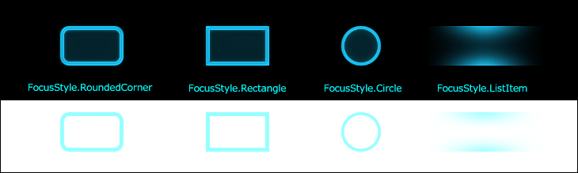
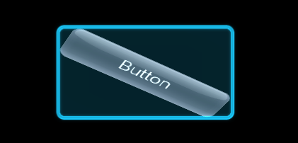

This chapter provides details on key events and the focus. For basic information, refer to Operating the Game Pad and Distributing Key Events in UI Toolkit Programming Guide - Basic Concepts.
Contents
The focus will automatically move a widget when the directional buttons are pressed. Here we will explain which widget is moved by the focus when the directional buttons are pressed.
The widget that will be the target for focus movement must meet all of the following conditions.
- The widget displayed on the screen
- The Focusable property is true
- All Enabled properties including the parent are true
For example, the focus will not move to widgets that are not fully visible due to being clipped by the parent widget or widgets where Visible is false.
If the child widget is true, the focus may be moved to the child widget even when the Focusable property for the parent widget is false. Focusable is true by default for widgets that can be operated with buttons such as Button widgets. On the other hand, Focusable is false for ImageBox, Label, and Panel widgets and the Widget base class, so set the value when required.
When the directional buttons are pressed, the focus will move to the widget closest to the direction of the pressed button from among the available widgets.
Next, we will explain the method for searching for the widget closest to the direction of a button. The following is an explanation only for when the right directional button has been pressed, but the other directional buttons will operate similarly.
For determining distance, the following three methods are available using the position relations between the widget where the focus currently is ("focus widget" hereafter) and the target search widget.
- A widget on the inside of the focus widget
- A widget that encapsulates the focus widget
- A widget that does not overlap with the focus widget
Figure 1 Widget Position Relation Types
If a widget is on the inside of the focus widget (1), this widget will take priority for the focus movement target. In other cases, the focus will move to the widget with the shortest amount of distance.
The methods for determining the distance with widgets are as follows.
A widget on the inside of the focus widget
Widgets with a center point that is inside a range that extends up and down to 50 degree angles from the center of the focus widget ("Focus Target Area" in Figure 2) will be focus movement targets.
The focus movement destination will be the one with the shortest distance from the focus widget to the target widget's center point.
Figure 2 Distance to a Widget on the Inside of the Focus Widget
A widget that encapsulates the focus widget
Widgets with a center point that is inside a range that extends up and down to 50 degree angles from the center of the focus widget ("Focus Target Area" in Figure 3) will be focus movement targets.
The focus movement destination will be the one with the shortest distance from its right side to the right side of the focus widget (the length of the arrow in Figure 3).

Figure 3 Distance to a Widget That Encapsulates the Focus Widget
A widget that does not overlap with the focus widget
Only widgets with a left side that is inside a range (even if only slightly) that extends up and down to 50 degree angles from the focus widget ("Focus Target Area" in Figure 4) will be focus movement targets.
The focus movement destination will be the one with the shortest distance from its left side to the right side of the focus widget (the length of the arrow in Figure 4).
However, if there are multiple widgets with the same distance, the one with the shortest distance between the center points will take priority.

Figure 4 Distance to a Widget That Does Not Overlap with the Focus Widget
By using the FocusCustomSettings property of widgets, the features related to the focus can be customized for each widget.
By setting the LeftCandidate, RightCandidate, UpCandidate, and DownCandidate properties of FocusCustomSettings, the focus will move to a widget when the corresponding directional button is pressed.
The initial value for FocusCustomSetting is null, so set an instance as in the following and set each value.
button1.FocusCustomSetting = new FocusCustomSetting(); button1.FocusCustomSetting.RightCandidate = button2;In this example, when the focus is on button1 and the right directional button is pressed, the focus will move to button2.
The focus will move to a widget set to xxxCandidate if it exists in the same scene and is properly cared for, even if Focusable or Visible is false.
By handling the directional buttons with PreviewKeyEventReceived events for widgets and the OnPreviewKeyEvent method, it is possible to change the focus movement destination.
To move the focus, call the SetFocus method for the widget that you want to move.
In the following example, the behavior will be the same as when the previously mentioned FocusCustomSetting.RightCandidate is set, but it is possible to create more complex movement algorithms.
button1.PreviewKeyEventReceived = (sender, e) => { if (e.KeyEventType == KeyEventType.Down || e.KeyEventType == KeyEventType.Repeat) { if (e.KeyType == KeyType.Left) { button2.SetFocus(true); e.Handled = true; } } }
The following is an explanation of focus design and its customization methods.
In the initial state, a "multiply" blend mode with a blue color is applied to the image, then it is rendered with an "add" blend mode (Figure 5). These can be changed with the UISystem.FocusFilterColor and UISystem.FocusBlendMode properties, respectively.
Figure 5 Focus Rendering
There are four standard types available for the focus image, and it can be changed by specifying the FocusStyle property of widgets (Figure 6).
Figure 6 FocusStyle Design
To use an image other than a FocusStyle one, use FocusCustomSettings.FocusImage. In addition, the focus size is based on the Width and Height of the widget, but it can be changed by specifying the FocusCustomSettings.FocusImageRectangle property of widgets.
The focus design will be displayed in the foreground of scenes and dialog. In addition, it will be displayed as a circumscribing rectangle when widgets are changing shape (Figure 7).
Figure 7 Focus Display Methods
To display the focus image on the background of a widget or to match the changing shape of a widget, creating and independently rendering a custom widget is required. In such cases, set FocusStyle to None, add the focus rendering elements to the widget itself, and handle OnFocusChanged to switch to displaying the rendering elements.
When you want usage to be combined with buttons, perform handling as in the following using the UISytem.GamePadData property. The UISytem.GamePadData property value can be obtained as-is from the GamePadData value passed with the UISytem.Update argument.
// handle "L" + "Triangle" key void KeyEventReceivedHandler(object sender, KeyEventArgs e) { // check "L" button as alternate key if (UISystem.GamePadData.Buttons.HasFlag(GamePadButtons.L)) { if (e.KeyType == KeyType.Triangle && e.KeyEventType == KeyEventType.Down) { DoSomething(); e.Handled = true; } } }
If you want to perform operations regardless of what widget the focus is on in a scene when a button is pressed, register KeyEventReceived or PreviewKeyEventReceived of RootWidget as the event handler.
By setting the UISystem.EnabledFocus to false, the focus feature can be disabled. In such cases, operation of the focus with the directional buttons and display of the focus will not be possible, but event distribution to RootWidget will be performed. Furthermore, by setting the focus manually using Widget.SetFocus, key events will be distributed for the widget and parent widget.